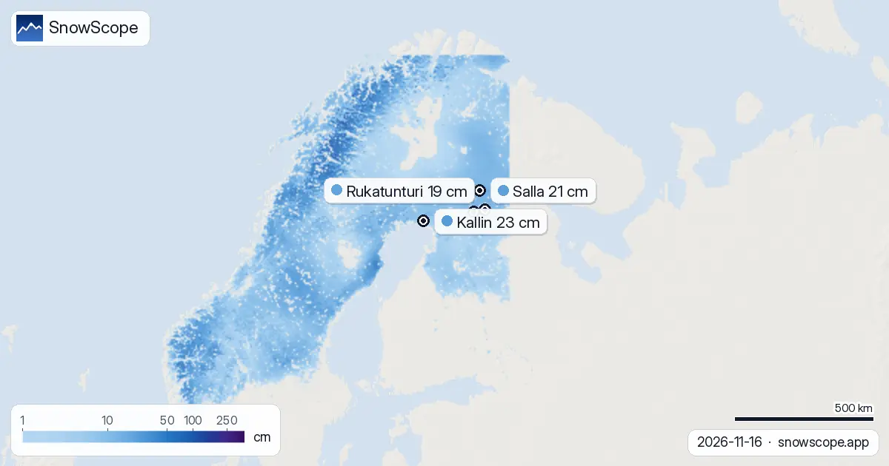

Combien de neige en Finlande ? Le point du 16 novembre 2026
La surface blanche en Finlande atteint environ 157 360 km² aujourd'hui, 19 930 km² de moins qu'hier. Autrement dit, 52 % du relief cartographié est blanc.
Consultez les prévisions neige en temps réel pour Kallin sur l'application SnowScopeHauteurs de neige, alertes poudreuse et carte 3D, gratuitement.
Quelle part du pays est blanche
Sous 200 m environ, les pentes sont surtout vertes ou brunes. Par rapport aux 18 830 km² d'il y a sept jours, c'est 138 530 km² de plus.
| Station | Hauteur de neige | Neige fraîche, 72 h | Attendu, jours suivants | Sommet |
|---|---|---|---|---|
| Kallin | 23 cm | 6 cm | 13 cm | 65 m |
| Salla | 21 cm | 16 cm | 10 cm | 462 m |
| Rukatunturi | 19 cm | 15 cm | 10 cm | 494 m |
| Kiririnteet | 18 cm | 14 cm | 11 cm | 385 m |
| Pyhä | 18 cm | 12 cm | 13 cm | 375 m |

En bas, à mi-pente et en haut
Hauteur de neige au sol, par tranche d'altitude : entre 0 et 500 m, 4 cm en moyenne, 52 % couverts; entre 500 et 1 000 m, 12 cm en moyenne, 97 % couverts; entre 1 000 et 1 500 m, 38 cm en moyenne, 100 % couverts.
Les dernières chutes
The Ruka fells ont reçu le plus de neige fraîche en trois jours, jusqu'à 11 cm.
En une journée, jusqu'à 3 cm se sont ajoutés.
Environ 68 630 km² ont reçu au moins 5 cm.
Sur le terrain
La neige fraîche rafraîchit le haut des pistes ; plus bas, elle peut déjà être lourde ou mouillée.
Avec de la neige annoncée, les prochains jours devraient encore améliorer la situation.
Les meilleures stations du moment
La neige la plus épaisse des stations du pays est à Kallin : 23 cm.
Juste derrière : Salla (21 cm), Rukatunturi (19 cm), Kiririnteet (18 cm) et Pyhä (18 cm).
À Kallin : 6 cm de neige fraîche en trois jours, 13 cm de plus attendus d'ici jeudi 19 novembre.
À Salla : 16 cm de neige fraîche en trois jours, 10 cm de plus attendus d'ici jeudi 19 novembre.
La neige recouvre le haut de 24 stations sur 67 en Finlande.
Ce qui arrive
De la neige est prévue : jusqu'à 11 cm d'ici trois jours, jusqu'à 19 cm en sept jours.
Le jour le plus neigeux devrait être le mercredi 18 novembre, avec jusqu'à 8 cm aux endroits les plus arrosés.
Conseils aux skieurs
- Vérifiez l'ouverture des remontées avant de partir.
- La neige de début de saison est fine sur les cailloux : privilégiez les pistes damées.
- Au-dessus de la forêt, la neige peut être ventée : attention aux crêtes.
À propos de ces chiffres
Les hauteurs de neige des stations sont la neige la plus épaisse sur le haut du domaine, d'après le modèle de neige SnowScope (environ 1 km, calcul du 16 novembre) ; ce sont des estimations pour une zone, pas une mesure en un point. Les valeurs des stations de mesure sont mesurées à la date indiquée. Les prévisions peuvent changer. Consultez toujours le bulletin d'avalanche officiel avant le hors-piste.
Citer ce bulletin
Pour la recherche, l'enseignement ou la presse : chiffres et graphiques réutilisables librement sous CC BY 4.0 avec cette citation.
SnowScope (2026), Combien de neige en Finlande ? Le point du 16 novembre 2026, https://snowscope.app/blog/fr/2026/11/finland-snow-report-16-november-2026.html, consulté le 2026-11-16
SnowScope (Atlas Labs). (2026, November 16). Combien de neige en Finlande ? Le point du 16 novembre 2026. SnowScope snow reports. https://snowscope.app/blog/fr/2026/11/finland-snow-report-16-november-2026.html
BibTeX
@misc{snowscope2026finlandsnowreport16novem,
author = {{SnowScope (Atlas Labs)}},
title = {Combien de neige en Finlande ? Le point du 16 novembre 2026},
year = {2026},
month = nov,
howpublished = {\url{https://snowscope.app/blog/fr/2026/11/finland-snow-report-16-november-2026.html}},
note = {Published 2026-11-16 20:42 UTC; accessed 2026-11-16}
}· CC BY 4.0 · Méthodes, données et outils →
Kallin : neige et température selon l'altitude, cet hiver vs l'hiver dernier (outils) →
Suivre Kallin
Gratuit : un message quand la neige arrive, et la météo chaque matin.
Autres bulletins neige

Neige en Slovaquie le 16 novembre : couverture, neige fraîche, hauteurs selon l'altitude, prochains jours et meilleures stations.

Neige en Suède le 16 novembre : couverture, neige fraîche, hauteurs selon l'altitude, prochains jours et meilleures stations.

Neige en Roumanie le 16 novembre : couverture, neige fraîche, hauteurs selon l'altitude, prochains jours et meilleures stations.